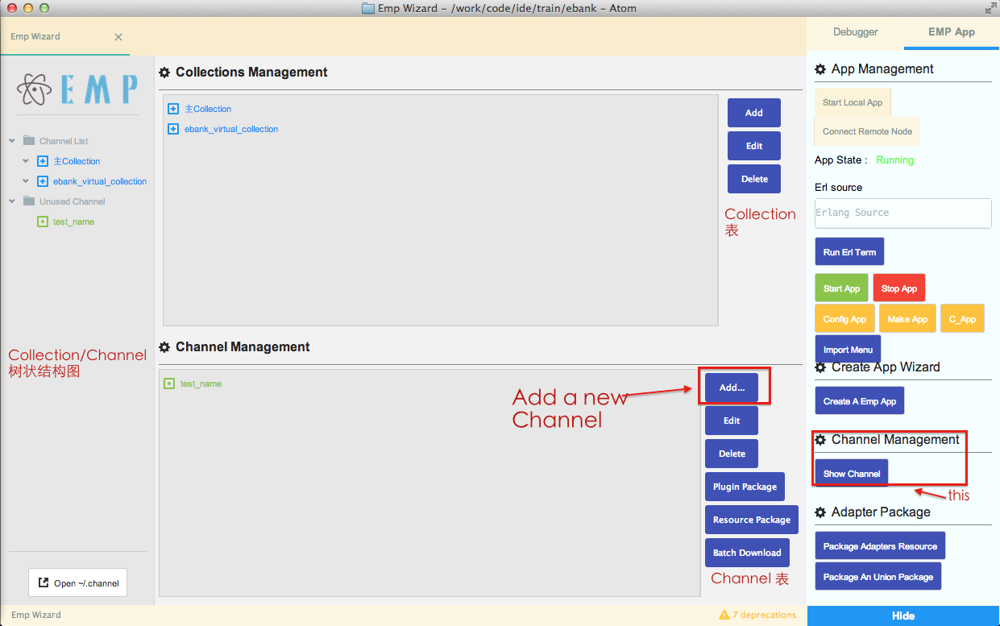
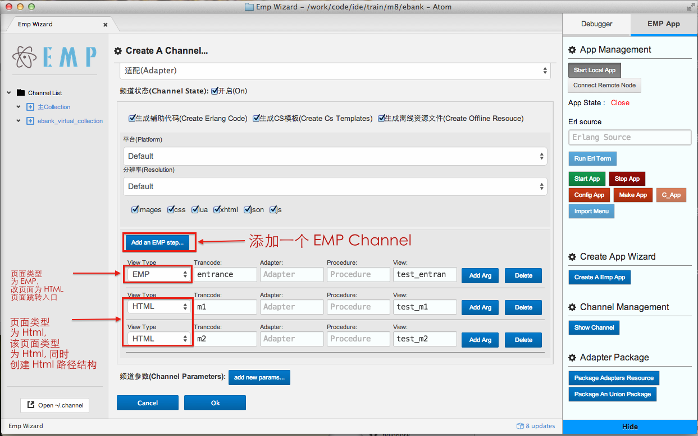
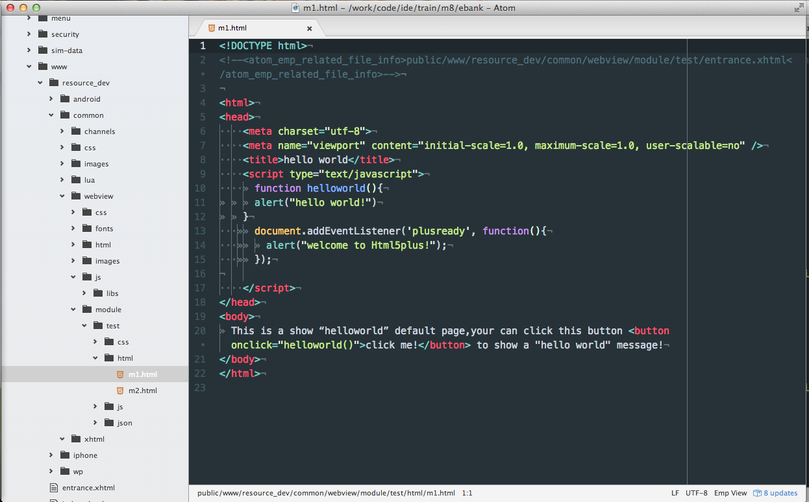
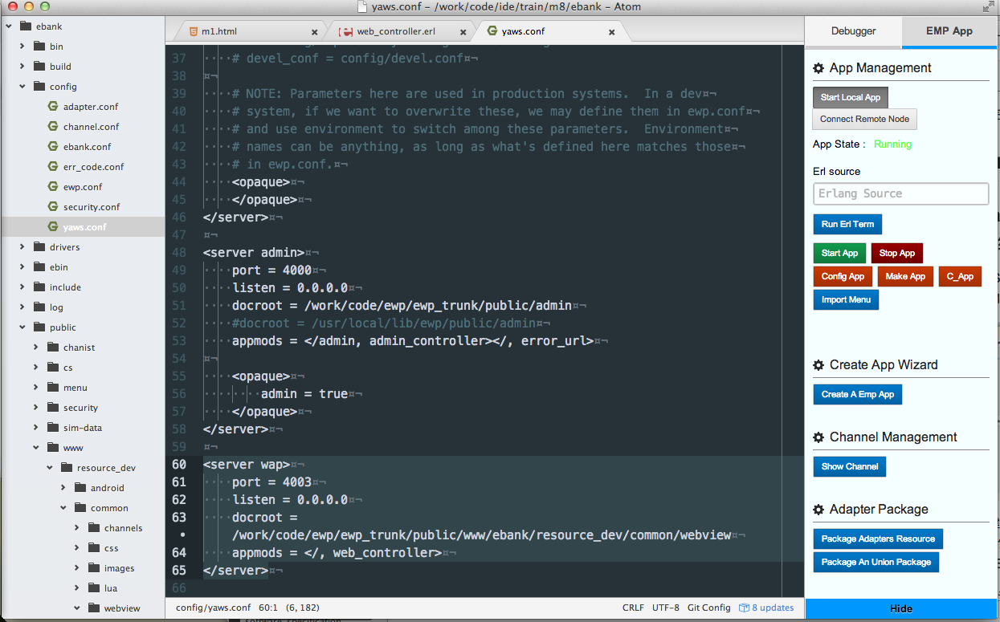
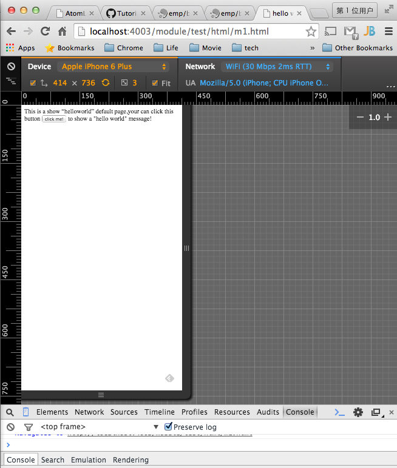
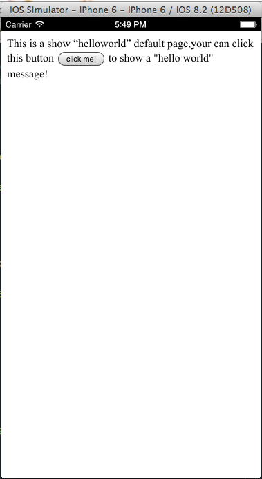
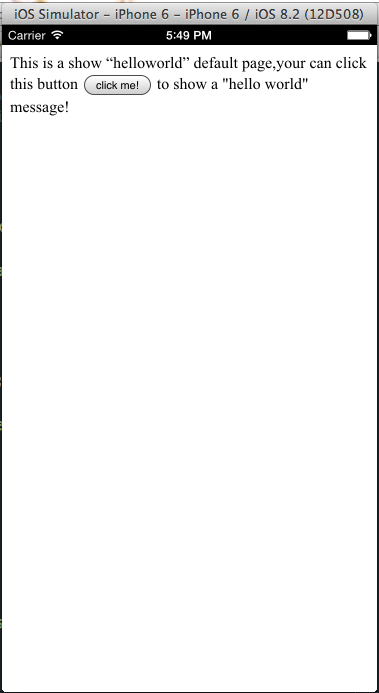

HTML Develop Guide
我们支持基于 EWP 进行 HTML 的开发和调试, 并且我们在开发工具中添加了对于EMP 框架下的 HTML 开发的支持, 下面我们来介绍一下如何在 EMP 框架下进行 HTML 的开发和调试.
1 环境
通过之前的介绍, 我们假设,你已经拥有了 EWP 的运行环境, 可供连接 EWP 调试的 客户端, 以及 Atom 开发工具.
2 创建 EMP App
打开Atom中Setting View，点击按钮 Create A Emp App，输入App名称(一般要求输入为ebank)点击ok创建Project。

注意： 此时APP名称需要与客户端包中APP名称一致，如果不一致会导致客户端连不上后台服务器。

Project 创建完成
3 创建 HTML 的结构路径
3.1 通过 Channel 管理器生成 HTML 应用路径结构
打开Atom中 Setting View，点击 Show Channel 按键, 呼出 EMP Channel 管理界面.

点解 Add 按键來添加一个新的 Channel. 输入 Channel 相关信息, 同是点击下侧的 Add an Emp Step
來添加 EMP 页面.
其中页面类型为 EMP 的页面是 EMP 的传统用页面. 类型 为 HTML 的页面为 HTML 页面.在这里
我们创建一个 EMP 的页面作为跳转到 HTML 页面的入口, 其余页面为普通的 HTML 页面. 输入确定之后
点击 Ok 來完成添加.

创建完成后, Atom 会为 HTMl 创建相关的路径结构.

4 通过 EWP 服务来部署我们的 HTML 页面
打开 EMP APP 下 config/yaws.conf, 把最下侧的注释打开,之后启动 APP.

在浏览器输入路径来查看页面是否部署成功(路径根据命名不同会有差异, 在这里我的路径是 http://localhost:4003/module/test/html/m1.html).

5 EMP Client 中查看我们的 HTML 页面
我们刚才添加 Channel 的时候,添加了一个入口 test/entrance, 我们打开
ebank/public/www/resource_dev/common/channels/test/xhtml/entrance.xhtml, 把里面的路径指向我们刚才创建的页面,我这里的 url 是 http://localhost:4003/module/test/html/m1.html.

然后我们打开客户端, 输入我们创建的入口, 然后点击访问,即可看到我们添加的页面.
 

6 其他
开发人员可以在该路径结构下基于一些前端框架进行页面开发, 但是需要注意的是, 开发人员需要对 Js 中的请求方法进行重定义,使所有的 Js 请求 定向到 EWP,以保证请求的安全性.